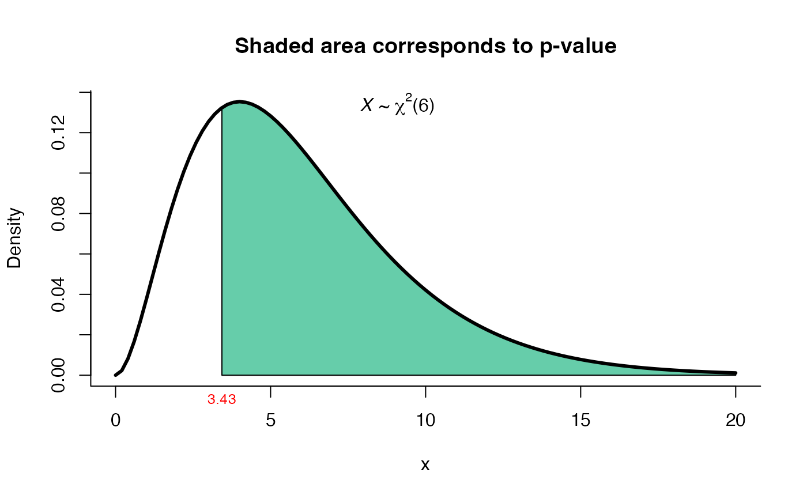
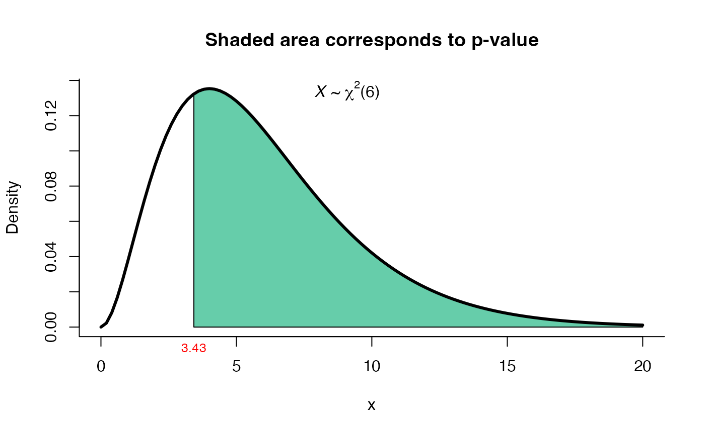

Test for \(\Sigma\) in a \(Np(\mu, \Sigma)\)
Source:R/one_covar_matrix_test.R
one_covar_matrix_test.RdThis function can be used to test \(H_0: \Sigma = \Sigma_0\) versus \(H_1: \Sigma\) not = \(\Sigma_0\).
one_covar_matrix_test(Sigma0, S, n, method = "lrt")Arguments
- Sigma0
a matrix indicating the hypothesized value of the covariance matrix \(\Sigma\).
- S
a matrix with sample variances and covariances.
- n
sample size.
- method
a character string specifying the method, it must be one of
"lrt"(default),"modlrt1"(modified LRT test) or"modlrt2"(modified LRT test for moderate"n"). You can specify just the initial letter. See details.
Value
A list with class "htest" containing the following components:
- statistic
the value of the statistic.
- parameter
the degrees of freedom for the test.
- p.value
the p-value for the test.
- estimate
the estimated covariance matrix S.
- method
a character string indicating the type of test performed.
Details
When method="lrt" (default) the function performs the LRT test given in Mardia et. al (1979), page 126, expression 5.2.7. For method="modlrt1" or method="modlrt2" the function performs the LRT test given in Rencher and Christensen (2012), page 260, expressions 7.2 and 7.4.
See also
one_mean_vector_test for test \(\mu\) in a \(Np(\mu, \Sigma)\).
Examples
# Example 5.3.2 from Mardia (1979) page 127
# Test H0: Sigma = diag(100, 100) versus H1: Sigma != diag(100, 100)
Sigma0 <- matrix(c(100, 0, 0, 100), ncol=2)
S <- matrix(c(91.481, 66.875, 66.875, 96.775), ncol=2)
res1 <- one_covar_matrix_test(Sigma0=Sigma0, S=S, n=25, method='lrt')
res1
#>
#> LRT test for Sigma matrix
#>
#> data: this test uses summarized data
#> lrt = 17.698, df = 3, p-value = 0.0005077
#> alternative hypothesis: true Sigma matrix is not equal to Sigma0
#>
#> sample estimates:
#> xbar_1 xbar_2
#> xbar_1 91.481 66.875
#> xbar_2 66.875 96.775
#>
plot(res1, from=12, to=20, shade.col='dodgerblue2')
# Example from Morrison (1990) page 293
# Test H0: Sigma = Sigma0 versus H1: Sigma != Sigma0
# using the modified LRT test versions
n <- 20
Sigma0 <- matrix(c(4, 3, 2,
3, 6, 5,
2, 5, 10), ncol=3)
S <- matrix(c(3.42, 2.60, 1.89,
2.60, 8.00, 6.51,
1.89, 6.51, 9.62), ncol=3)
res2 <- one_covar_matrix_test(Sigma0=Sigma0, S=S, n=n, method='modlrt1')
res2
#>
#> Modified LRT test for Sigma matrix
#>
#> data: this test uses summarized data
#> lrt = 3.6374, df = 6, p-value = 0.7256
#> alternative hypothesis: true Sigma matrix is not equal to Sigma0
#>
#> sample estimates:
#> xbar_1 xbar_2 xbar_3
#> xbar_1 3.42 2.60 1.89
#> xbar_2 2.60 8.00 6.51
#> xbar_3 1.89 6.51 9.62
#>
plot(res2, from=0, to=20, shade.col='indianred1')
 res3 <- one_covar_matrix_test(Sigma0=Sigma0, S=S, n=n, method='modlrt2')
res3
#>
#> Modified LRT test for Sigma matrix with moderate n
#>
#> data: this test uses summarized data
#> lrt = 3.43, df = 6, p-value = 0.7533
#> alternative hypothesis: true Sigma matrix is not equal to Sigma0
#>
#> sample estimates:
#> xbar_1 xbar_2 xbar_3
#> xbar_1 3.42 2.60 1.89
#> xbar_2 2.60 8.00 6.51
#> xbar_3 1.89 6.51 9.62
#>
plot(res3, from=0, to=20, shade.col='aquamarine3')

res3 <- one_covar_matrix_test(Sigma0=Sigma0, S=S, n=n, method='modlrt2')
res3
#>
#> Modified LRT test for Sigma matrix with moderate n
#>
#> data: this test uses summarized data
#> lrt = 3.43, df = 6, p-value = 0.7533
#> alternative hypothesis: true Sigma matrix is not equal to Sigma0
#>
#> sample estimates:
#> xbar_1 xbar_2 xbar_3
#> xbar_1 3.42 2.60 1.89
#> xbar_2 2.60 8.00 6.51
#> xbar_3 1.89 6.51 9.62
#>
plot(res3, from=0, to=20, shade.col='aquamarine3')
